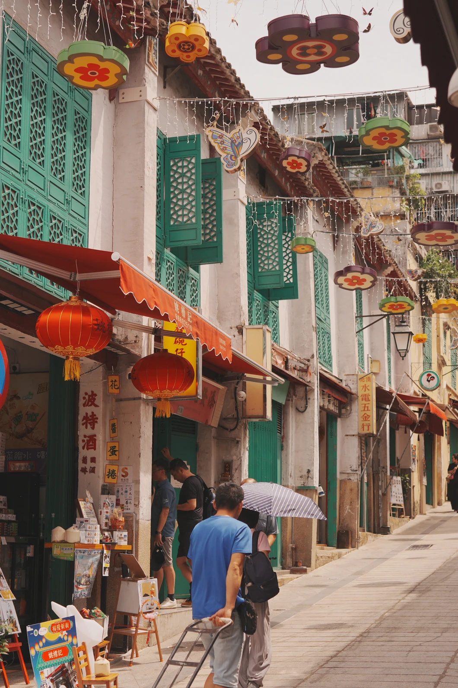
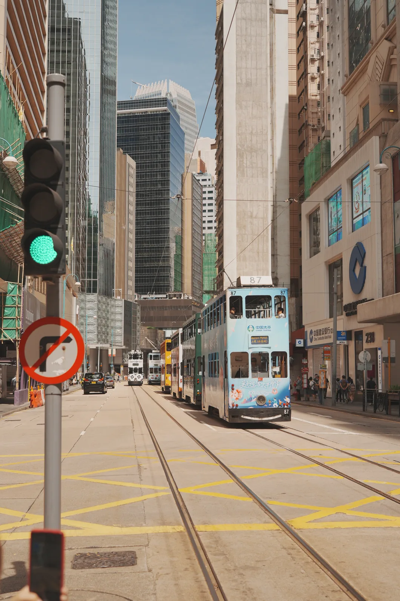
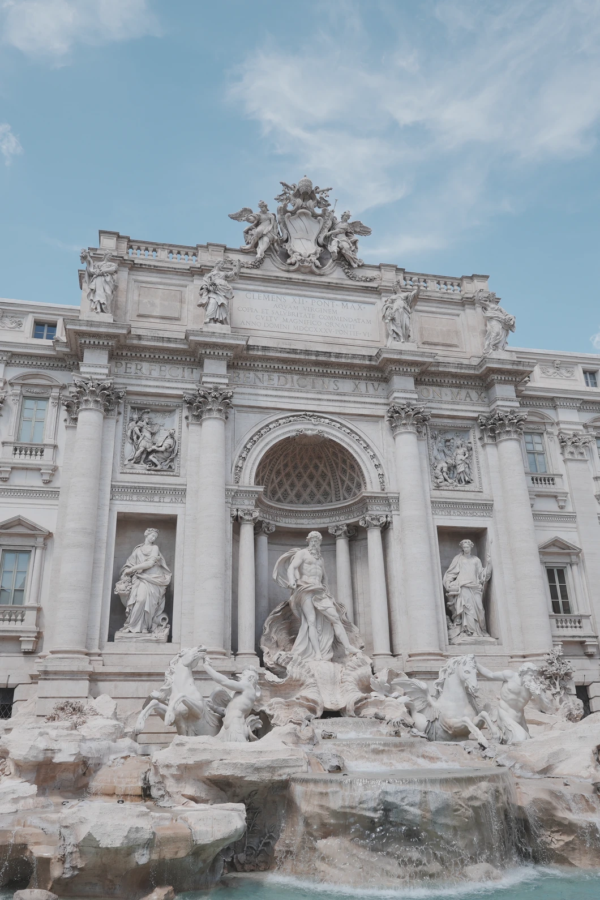
立足中山 · 连接大湾区向下浏览 ↓
服务
了解服务 ↗精选作品
全部服务 ↗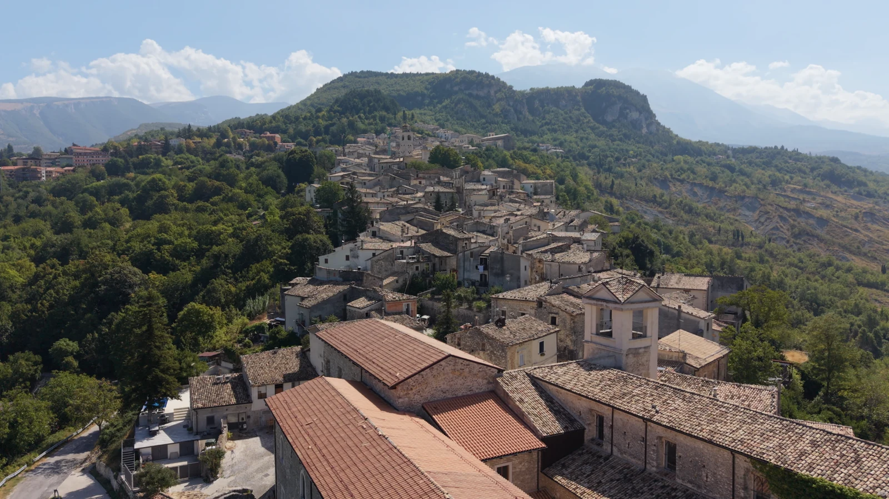
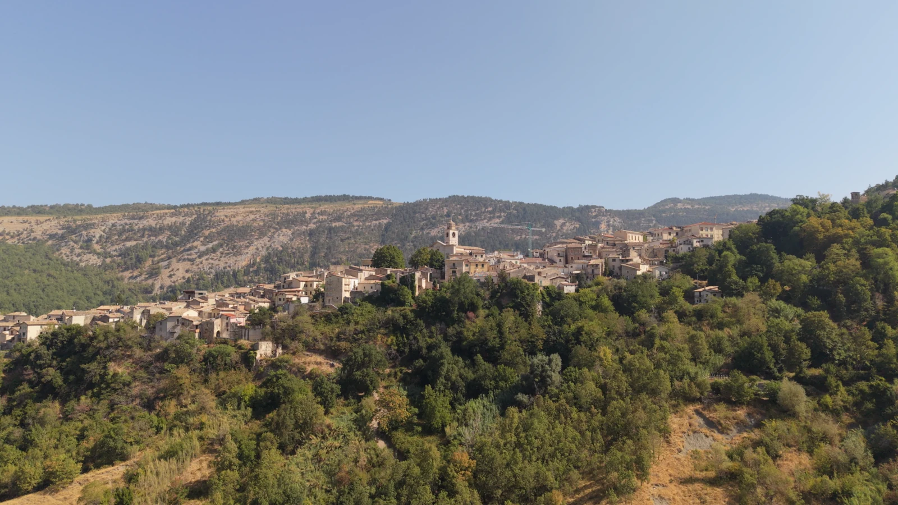
查看项目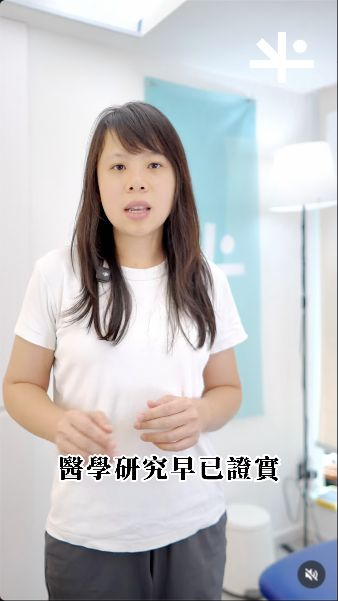
查看项目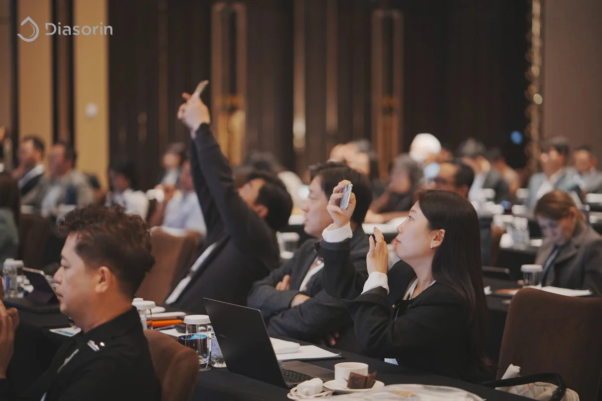
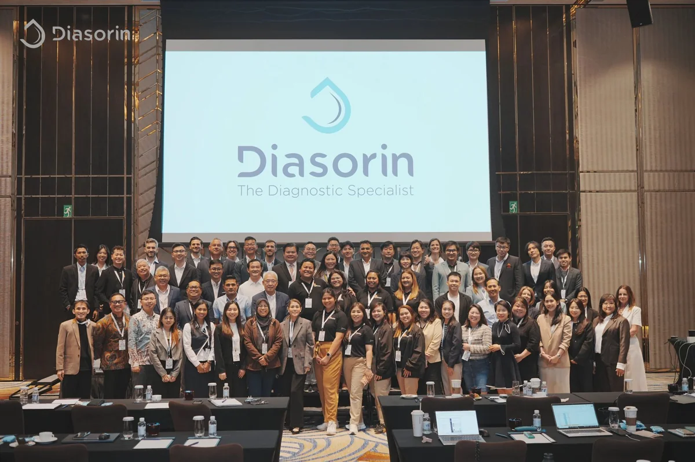
查看项目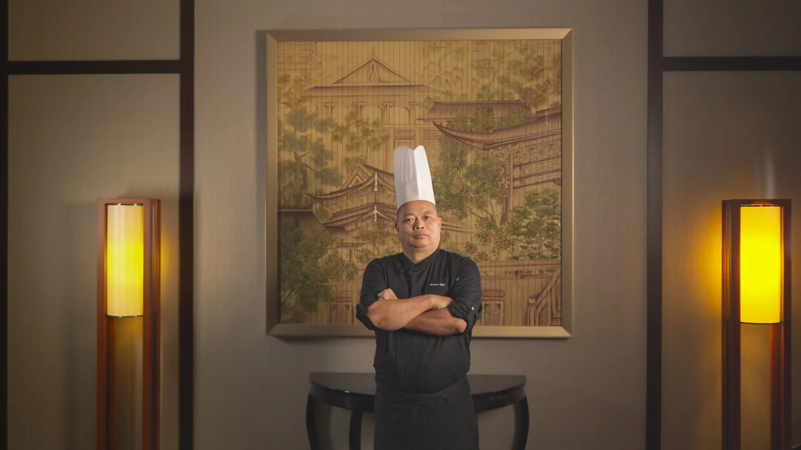
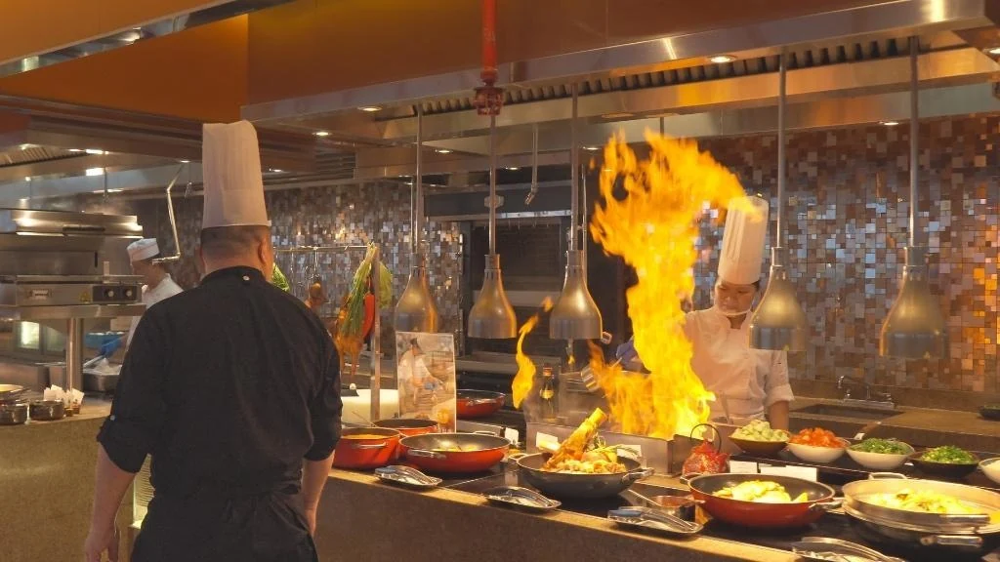
查看项目THE STUDIO
关于工作室
MaxYourWay 为澳门及大湾区的酒店、品牌和机构提供社交媒体内容策划与制作、商业摄影及品牌宣传片制作。拍摄范围涵盖酒店客房与室内空间、餐饮及商品摄影、活动纪实与照片直播。
我们曾为澳门航空制作 100 条目的地短片，并拍摄酒店主厨系列及企业厂房专题。从前期策划、现场拍摄到剪辑及修图，我们按社交平台、酒店预订平台及品牌宣传的需要交付成品。
查看合作品牌 ↗合作企业
查看合作案例 ↗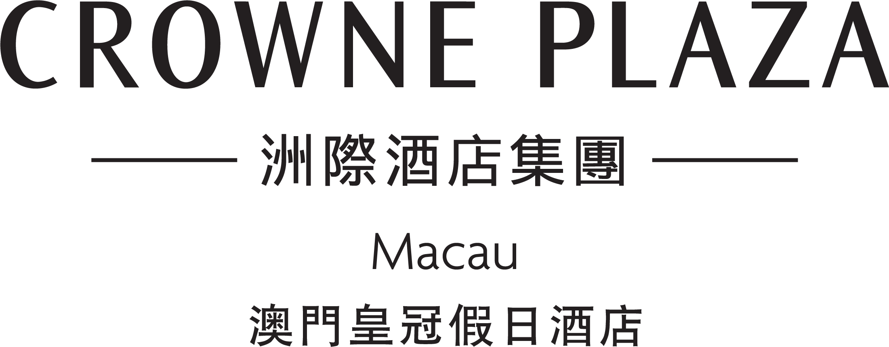
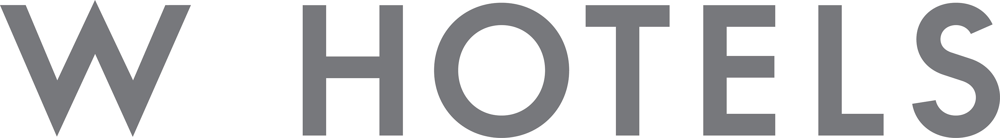
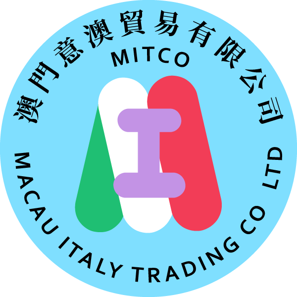
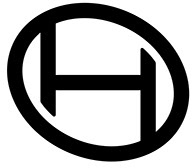
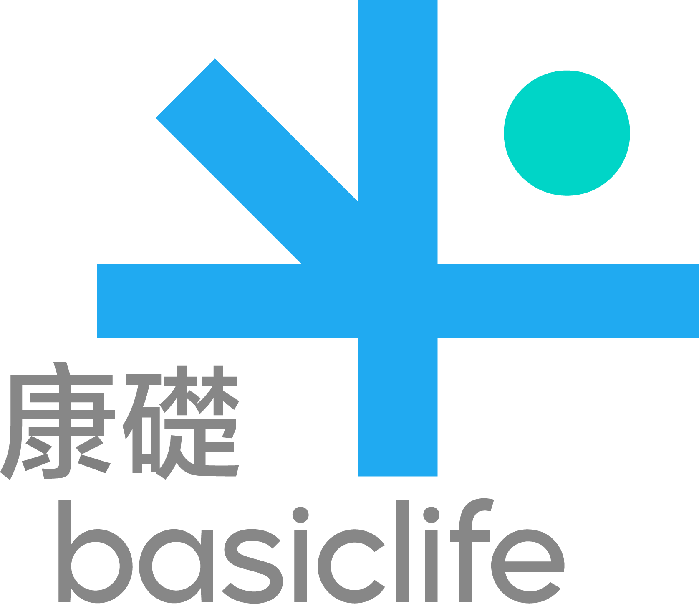
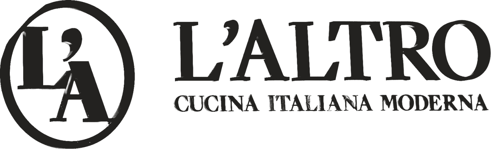
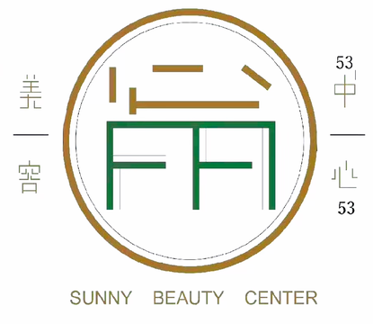
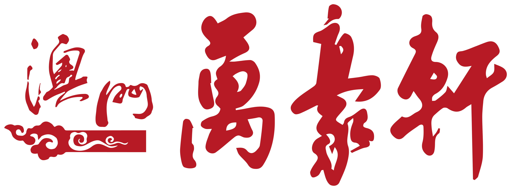
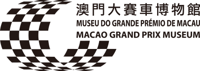
LET’S MAKE SOMETHING THAT MATTERS.